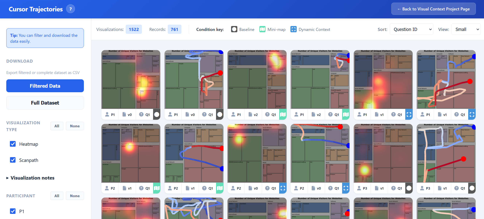

Improving Low-Vision Chart Accessibility via On-Cursor Visual Context
![An illustration of a person with low vision leaning towards the monitor, trying to read a chart (left). The chart is shown in full with the caption "What provides context in chart reading?". Four highlighted chart elements are: axes, legend, grid lines, and the overview. Both interaction methods are shown side-by-side. Dynamic Context shows the axes, legend, and one horizontal and vertical grid lines which connect at the center of the display. Mini-map shows a small floating copy of the chart with an indication of the current position relative to the chart.](static/images/system-teaserimage.jpg)
Abstract
Charts remain largely inaccessible for Low-Vision Individuals (LVI). Exploring charts requires viewing data points within their global context, which is difficult for LVI, who may rely on magnification or experience partial field of vision. We aim to improve exploration by providing critical context visually. To inform this, we conducted a formative study with five LVI. We identified four contextual elements common across charts: axes, legend, grid lines, and the overview. We propose two interaction methods to provide this context: Dynamic Context, a novel focus+context interaction, and Mini-map, which adapts overview+detail principles for LVI. In a study with N=22 LVI, we evaluated both methods and their integration with assistive tools. Our results show that Dynamic Context had significant positive impact on access, usability, and effort reduction; however, worsened visual load. Mini-map strengthened spatial understanding, but less preferred for this task. We offer design insights to guide the development of future systems that support LVI with visual context while balancing visual load.
Interactive Data Viewer
We provide an interactive catalogue to explore cursor trajectory data collected during our study with low-vision participants. The Visual Context Catalogue contains detailed interaction records from three experimental conditions: baseline (using assistive tools alone), Mini-map augmentation, and Dynamic Context enhancement. Participants interacted with various charts while their cursor movements were recorded at high frequency with millisecond precision.
The interactive viewer offers:
- Multi-dimensional Filtering: Filter by visualization type (heatmap, contour, scanpath, etc.), participant, experimental condition, and task/question
- Visual Analytics: Browse time-weighted trajectory heatmaps and scanpath visualizations with interactive hover previews
- Data Export: Download filtered results or the complete interaction dataset as CSV for further analysis
- Accessibility-First Design: Semantic HTML, keyboard navigation, and screen reader support

BibTeX
@inproceedings{sechayk2026ChartAccessibility,
author = {Sechayk, Yotam and Rave, Hennes and R\"adler, Max and Colley, Mark and Zhou, Zhongyi and Shamir, Ariel and Igarashi, Takeo},
title = {Improving Low-Vision Chart Accessibility via On-Cursor Visual Context},
year = {2026},
month = {April},
publisher = {Association for Computing Machinery},
address = {New York, NY, USA},
location = {Barcelona, Spain},
url = {https://doi.org/10.1145/3772318.3791165},
doi = {10.1145/3772318.3791165},
abstract = {Charts remain largely inaccessible for Low-Vision Individuals (LVI). Exploring charts requires viewing data points within their global context, which is difficult for LVI, who may rely on magnification or experience partial field of vision. We aim to improve exploration by providing critical context visually. To inform this, we conducted a formative study with five LVI. We identified four contextual elements common across charts: axes, legend, grid lines, and the overview. We propose two interaction methods to provide this context: Dynamic Context, a novel focus+context interaction, and Mini-map, which adapts overview+detail principles for LVI. In a study with N=22 LVI, we evaluated both methods and their integration with assistive tools. Our results show that Dynamic Context had significant positive impact on access, usability, and effort reduction; however, worsened visual load. Mini-map strengthened spatial understanding, but less preferred for this task. We offer design insights to guide the development of future systems that support LVI with visual context while balancing visual load.},
booktitle = {Proceedings of the 2026 CHI Conference on Human Factors in Computing Systems (CHI '26)},
numpages = {21},
series = {CHI '26}
}